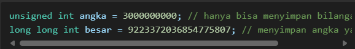
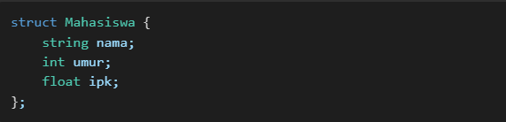
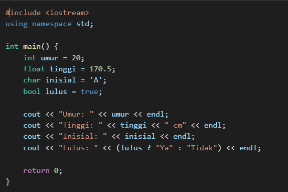

1. Pengertian Tipe Data
Tipe data dalam C++ digunakan untuk menentukan jenis nilai yang dapat disimpan dalam suatu variabel. Tipe data menentukan ukuran dan jenis operasi yang dapat dilakukan pada data tersebut.
2. Macam - Macam Tipe Data dalam C++
Secara umum, tipe data dalam C++ dapat dibagi menjadi beberapa kategori utama:
a. Tipe Data Primitif
| Tipe Data | Ukuran (Byte) | Rentang Nilai |
|---|---|---|
| bool | 1 | true atau false |
| char | 1 | -128 hingga 127 (signed) atau 0 hingga 255 (unsigned) |
| int | 4 | -2,147,483,648 hingga 2,147,483,647 |
| float | 4 | ~3.4E-38 hingga ~3.4E+38 |
| double | 8 | ~1.7E-308 hingga ~1.7E+308 |
| void | 0 | Tidak memiliki nilai |
b. Tipe Data Modifikasi
C++ menyediakan beberapa kata kunci untuk memodifikasi tipe data, seperti:
- Signed dan unsigned: Menentukan apakah tipe data mendukung nilai negatif.
- Short dan long: Menentukan ukuran integer yang lebih kecil atau lebih besar.
Contoh penggunaan:
c. Tipe Data Struktur Kompleks
Tipe data ini memungkinkan penyimpanan beberapa nilai dengan berbagai tipe dalam satu entitas.
- Array: kumpulan data dengan tipe yang sama.
- Struct: kumpulan variabel dengan tipe yang berbeda dalam satu objek.
- Class: mirip dengan struct tetapi memiliki fitur tambahan seperti enkapsulasi dan pewarisan
- Pointer: menyimpan alamat memori dari variabel lain.
Contoh penggunaan:
3. Contoh Penggunaan Tipe Data dalam C++
Berikut contoh kode program untuk mendemonstrasikan penggunaan tipe data:
